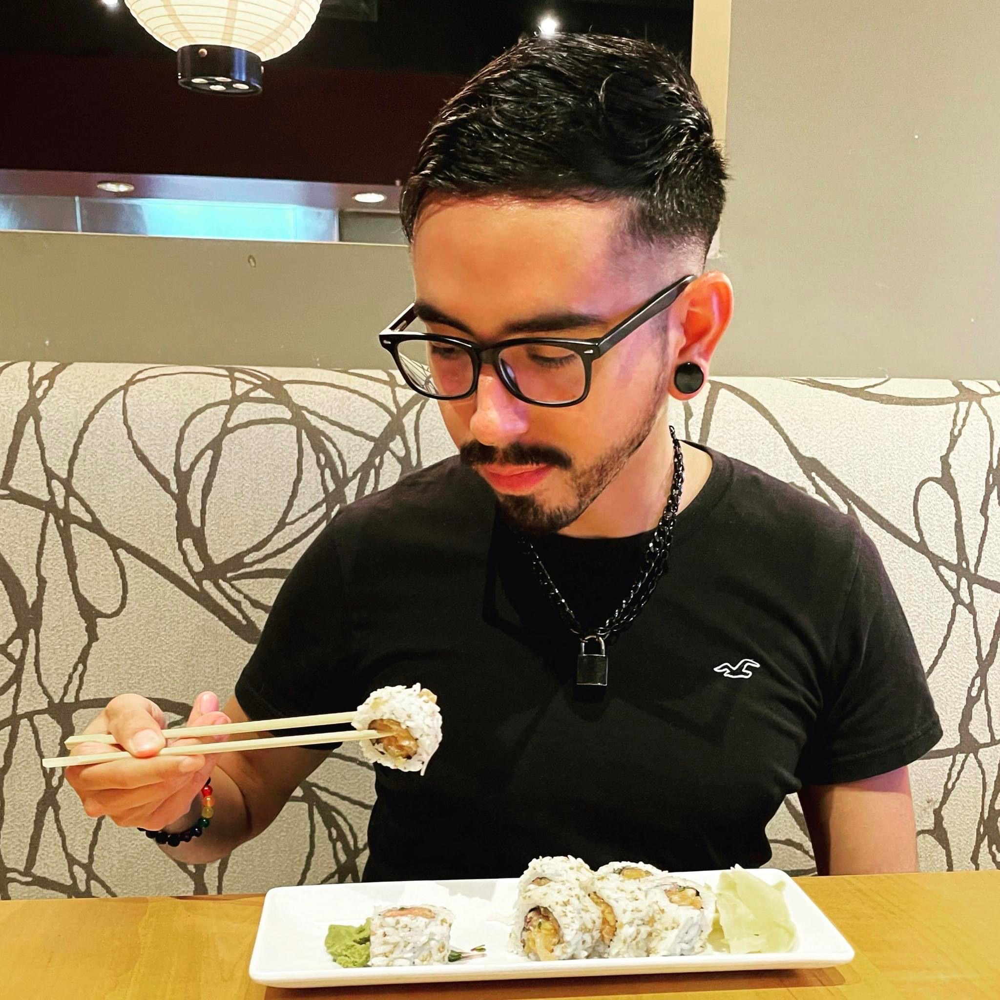

Who is Gerardo Perez?
Day 122 May 8th Thursday- I must have had a good sleep because I slept the entire way even though it felt like a bumpy ride. I was still asleep when we got there and the guy had to tell me we are here. It's sort of sprinkling and I go to the train station. Luckily the station is open and I can go inside. Turns out the train to Rome is 25 minutes late. No big deal. It is now 30 minutes late. 35 minutes late. It finally arrives and I get on but everybody is asleep in their cabin and I don't want to go in and disturb everybody so I sit outside in the isle. Man I try to sleep but it's hard to. We soon arrive in Rome and I immediately start looking for wifi. I can't find any in the nearby locations. I end up going to a café/restaurant and I order a croissant and a banana juice just so I can use the wifi. I look up hostels and all that. I find one near the Trastevere neighborhood for $55 so I'm going to go check it out. I take the train over there and find the place. The dude is weird and the place is shady and his place was full. I came here for nothing so I'm going back. I arrive at the station and then walk to that café to use their internet. I look for a hostel. I find one and book it. I then start heading over there. It's such a warm sunny day. I get to the Bologna stop and I take the wrong street but I soon turn back to the correct one. I find the hostel and check-in. Then the lady tells me to wait because the rooms aren't ready. I end up waiting for a while. Until 2 pm they let us in. I get settled and the head out. I stop by the supermarket to buy my dinner and head back to the hostel to put the stuff in the fridge. I head to the metro and I buy a three day pass. I then take the metro to the Colosseum. I get out of the metro and then see the huge Roman ruin. It's impressive even with the restoration work on one side. I walk all around it taking pictures and recording. I then decide to go in so I get my ticket and enjoy my time inside. Funny because I see the same Asian couple that was in front of me while waiting to go inside the Venetian tower in Venice. I ask them to take a picture of me. After the Colosseum I walk by the Forum entrance and take a lonely road to a church. After this I walk by the main avenue that leads to the Monumento a Vitorio Emmanuel seeing some ancient Roman ruins on the way. I then arrive at the monument and it is huge! I take pictures and then try to cross the street to take better pictures. I don't know how people here cross without traffic lights. It's a huge avenue. People just simply jump into traffic and the cars stop. It's crazy! When I'm done I walk by an avenue in front of the monument and I'm on my way to the Trevi fountain. I pass by the Italian parliament building and then finally find the Trevi fountain. I stay until sunset and enjoy the place. My feet are killing me! After this I walk to the Spanish Steps passing by the Spanish embassy. I climb the stairs up and take pictures then go down to the metro where I take it back to the hostel. I pass by an ice cream store in the way and get some ice cream. I get a type of candy or something weird like that. I finish it and then go in the hostel. I sit down in the commune area and eat my bread and cheese. I then take my coco yogurt to the room where I eat. Some girl asks me where I'm from and turns out she's from Mexico. I then just go to sleep.